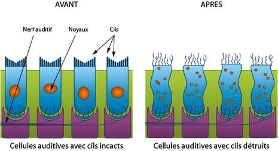

La musique prolongée et trop forte a des effets nocifs directs sur ton audition :
Hyperacousie :
sensation que les bruits sont amplifiés
Acouphènes :
bourdonnements ou
sifflements d’oreilles
désagréables
Surdité :
diminution de
l’audition
Concrètement, comment un gros bruit peut-il faire des
dégâts dans ton oreille?
Ces symptômes sont des signaux d’alerte et doivent t’inciter à te
protéger !
Mais la plupart du temps, la perte d’audition s’installe
progressivement sans réelle douleur et est donc difficile à
remarquer.
La musique à niveau trop élevé a aussi d’autres effets sur la santé :sommeil perturbé, stress, fatigue, aggravation des pathologies
cardio-vasculaires, etc. Elle augmente aussi le risque d’accidents,
et entraîne des comportements agressifs.
Les bons gestes
Quels sont les bons gestes à adopter lorsque j’utilise un casque ou des écouteurs ?
Pour protéger ton audition, baisse le son !
Evite d’écouter trop fort et trop longtemps.
pas plus d’une heure par jour à la moitié du volume
Ne cherche pas à couvrir le bruit ambiant en ville par ta musique.
Ne t’endors pas avec un casque ou des écouteurs en marche.
A propos
Cette campagne de sensibilisation a été réalisée dans le cadre d’un
projet scolaire du collège Flora Tristan à Paris dans le XXe.
Elle répond à la problématique : Comment le mode de vie peut-il
endommager nos organes sensoriels ?
Les auteures sont Liémelle LATEVI et Romane AUBAIN toutes
deux en 4D
Sources :
Site Internet du ministère de la Santé, , , et
bruit.fr (centre
d’information sur le bruit)
le Figaro
Wikipédia
Explications...
De quoi est formée ton oreille ?
De trois parties :
L’oreille externe : composée du pavillon d’entrée collectant le son
et du conduit auditif fermé par le tympan (membrane vibrant
comme un tambour)
L’oreille moyenne : espace d’air incluant trois petits os (marteau,
enclume, et étrier) qui transmettent les vibrations du tympan à
l’oreille interne.
L’oreille interne : remplie de liquide, transforme ces vibrations en
message nerveux sensitifs.
Concrètement, comment un gros bruit peut-il faire des
dégâts dans ton oreille?
Un gros bruit peut endommager et même détruire des cellules de
l’oreille interne (cellules ciliées). Les cellules ciliées sont
extrêmement sensibles et ne se régénèrent pas. Cela peut donc
entraîner une surdité parfois irréversible.

Les cellules ciliées avant et après avoir été endommagées par un bruit